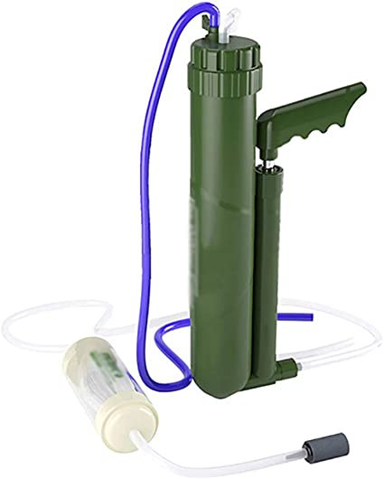
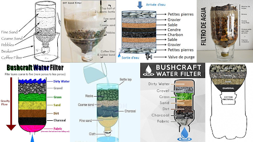
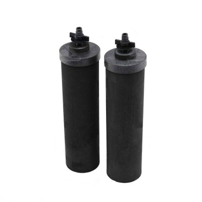
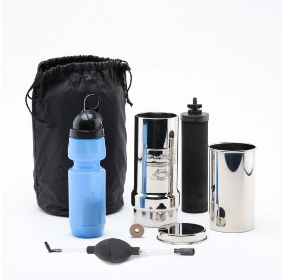
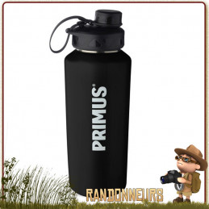
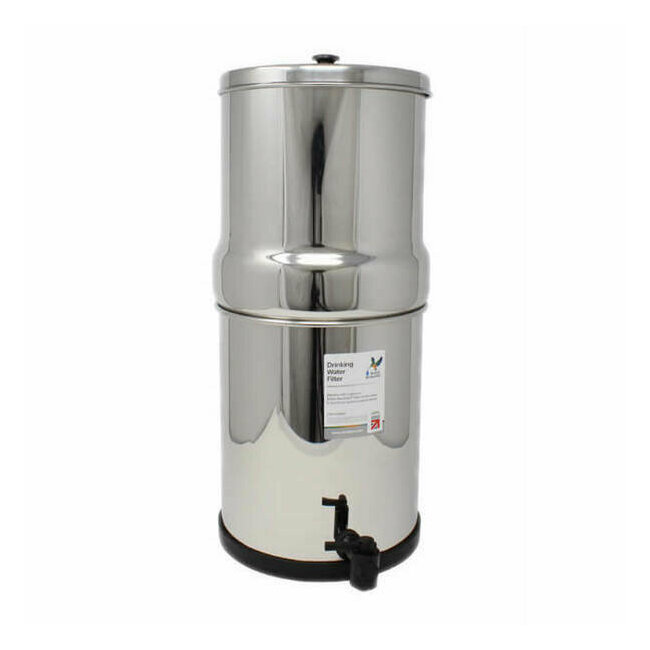
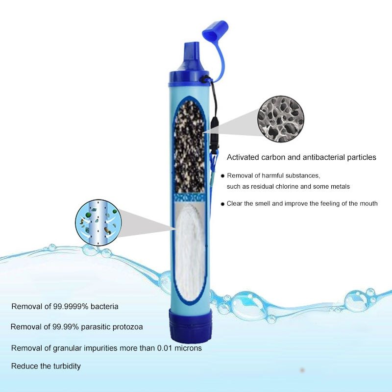
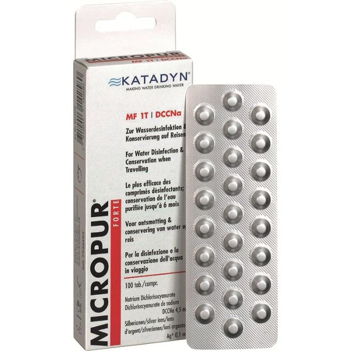
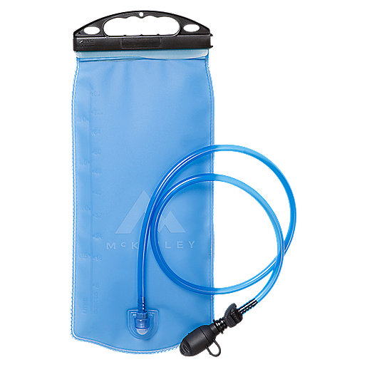

Filtrer son eau est une excellente manière d’améliorer sa qualité et de la rendre potable ou plus agréable à boire. Voici quelques méthodes adaptées selon vos besoins et votre situation (maison, randonnée, urgence, etc.). 🌿💧
Filtre à charbon actif : Élimine les mauvaises odeurs, le goût de chlore et certains contaminants chimiques. Disponible en carafes filtrantes ou comme cartouches intégrées à des robinets.

Filtres à osmose inverse : Élimine les impuretés fines, métaux lourds, nitrates, et même les bactéries. Plus coûteux mais très efficace.

Adoucisseur d’eau : Réduit la dureté de l’eau (calcaire), mais ne filtre pas les contaminants chimiques ou biologiques.
Portez l’eau à ébullition pendant au moins 1 à 2 minutes pour tuer les bactéries, virus et parasites. Cette méthode est simple et fiable, mais ne retire pas les particules ou les polluants chimiques.
Facile à utiliser, elle contient un filtre à charbon actif ou des résines qui retiennent certains polluants. Idéale pour une eau du robinet potable mais avec un mauvais goût.


Ces bouteilles portables sont équipées d’un filtre intégré (souvent au charbon actif ou en fibre creuse). Parfaites pour les sorties ou une utilisation quotidienne en ville.

Filtres à pompe ou à gravité : Utilisés pour les randonnées et voyages. Retirent les bactéries, parasites et certaines impuretés (selon le modèle).


Filtres en céramique : Très efficaces pour retenir les particules fines et les microorganismes.
Pastilles de purification : Utilisées pour tuer les bactéries, virus et parasites. Contiennent du chlore ou de l’iode. Efficaces mais peuvent laisser un goût résiduel.

Chlore ou eau de Javel (en cas d’urgence) : Ajoutez 2 à 4 gouttes d’eau de Javel sans parfum par litre d’eau et laissez agir 30 minutes. Utilisez uniquement si aucune autre méthode n’est disponible.
Chauffez l’eau jusqu’à évaporation, puis récupérez la vapeur condensée. Retire pratiquement tous les contaminants, y compris les sels et métaux lourds.
Filtre à sable et charbon : Superposez des couches de sable, de gravier, et de charbon actif dans une bouteille ou un contenant. Filtre les grosses particules et améliore le goût, mais ne rend pas l’eau potable à elle seule.

Tissu ou gaze : Peut être utilisé pour filtrer rapidement les grosses particules (feuilles, sable), mais ne retire pas les microorganismes.
Vous avez une situation particulière ? Je peux vous aider à choisir la méthode la mieux adaptée. 😊